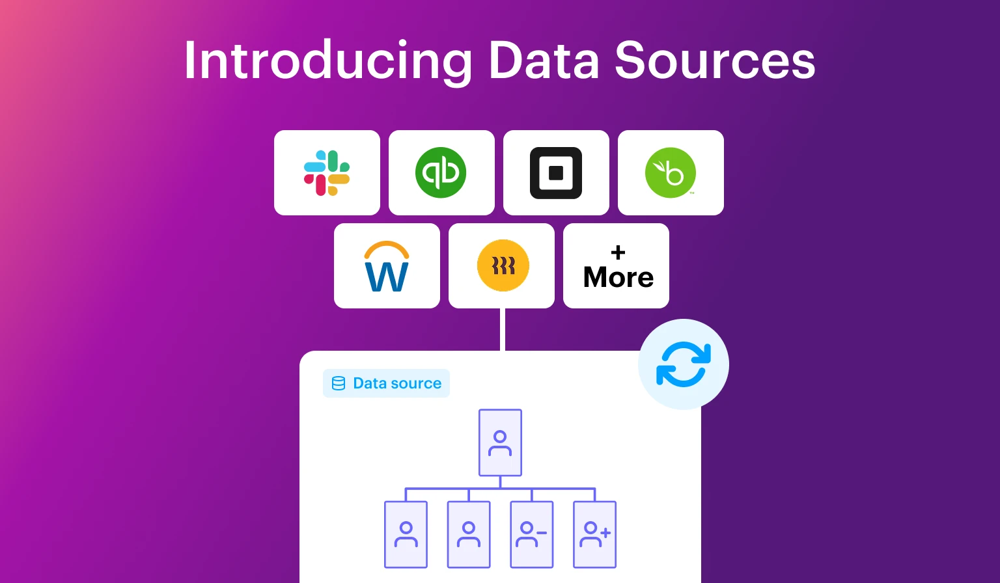

CONNECTED DATA · ARTICLE TEMPLATE
A clearer structure starts with connected data
What changes when organization design starts with current information, clear responsibilities and a shared view of the work?
Read the article layoutORGINOMETRY / IDEAS FOR BETTER ORGANIZATIONS
Explore organization design, connected data and the decisions that shape how teams work.
THE ART & SCIENCE OF ORG DESIGN
3 articles

CONNECTED DATA · ARTICLE TEMPLATE
What changes when organization design starts with current information, clear responsibilities and a shared view of the work?
Read the article layoutPEOPLE & CULTURE
Explore the relationship between a team's structure and the way people work together.
Read on Functionly ↗CONNECTED DATA
A closer look at Functionly's data source integrations and maintaining a useful picture of the organization.
Read on Functionly ↗Try a different search or reset the topic filter.
MAKE ROOM FOR WHAT COMES NEXT